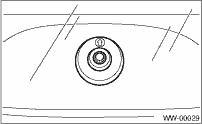
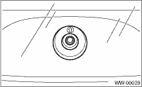

1. Install in the reverse order of removal.
2. Install the rear wiper cushion with the arrow mark facing up, as shown in the figure.

Tightening torque:
Refer to “COMPONENT” of “General Description”. 
WIPER AND WASHER SYSTEMS > Rear Wiper Motor
1. Install in the reverse order of removal.
2. Install the rear wiper cushion with the arrow mark facing up, as shown in the figure.

Tightening torque:
Refer to “COMPONENT” of “General Description”.